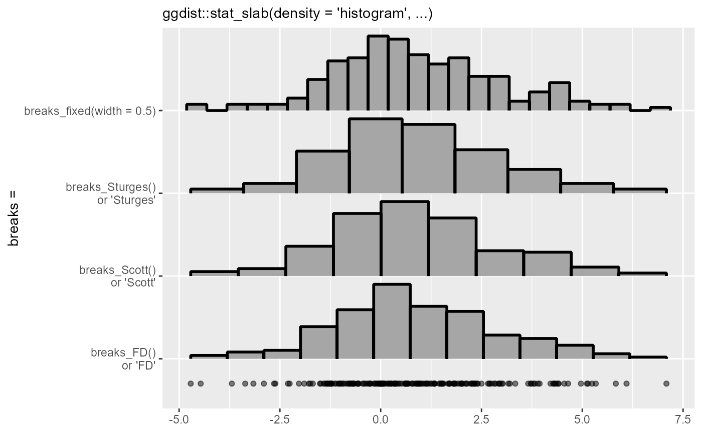

Methods for determining breaks (bins) in histograms, as used in the breaks
argument to density_histogram().
Supports automatic partial function application with waived arguments.
Usage
breaks_fixed(x, weights = NULL, width = 1)
breaks_Sturges(x, weights = NULL)
breaks_Scott(x, weights = NULL)
breaks_FD(x, weights = NULL, digits = 5)
breaks_quantiles(x, weights = NULL, max_n = "Scott", min_width = 0.5)Arguments
- x
<numeric> Sample values.
- weights
<numeric | NULL> Optional weights to apply to
x, which will be normalized to sum to 1.- width
<scalar numeric> For
breaks_fixed(), the desired bin width.- digits
<scalar numeric> For
breaks_FD(), the number of significant digits to keep when rounding in the Freedman-Diaconis algorithm. For an explanation of this parameter, see the documentation of the corresponding parameter ingrDevices::nclass.FD().- max_n
<scalar numeric | function | string> For
breaks_quantiles(), either a scalar numeric giving the maximum number of bins, or another breaks function (or string giving the suffix of the name of a function prefixed with"breaks_") that will return the maximum number of bins.breaks_quantiles()will construct at mostmax_nbins.- min_width
<scalar numeric> For
breaks_quantiles(), a numeric between0and1giving the minimum bin width as a proportion ofdiff(range(x)) / max_n.
Details
These functions take a sample and its weights and return a value suitable for
the breaks argument to density_histogram() that will determine the histogram
breaks.
breaks_fixed()allows you to manually specify a fixed bin width.breaks_Sturges(),breaks_Scott(), andbreaks_FD()implement weighted versions of their corresponding base functions. They return a scalar numeric giving the number of bins. Seenclass.Sturges(),nclass.scott(), andnclass.FD().breaks_quantiles()constructs irregularly-sized bins usingmax_n + 1(possibly weighted) quantiles ofx. The final number of bins is at mostmax_n, as small bins (ones whose bin width is less than half the range of the data divided bymax_ntimesmin_width) will be merged into adjacent bins.
Examples
library(ggplot2)
set.seed(1234)
x = rnorm(2000, 1, 2)
# Let's compare the different break-selection algorithms on this data:
ggplot(data.frame(x), aes(x)) +
stat_slab(
aes(y = "breaks_fixed(width = 0.5)"),
density = "histogram",
breaks = breaks_fixed(width = 0.5),
outline_bars = TRUE,
color = "black",
) +
stat_slab(
aes(y = "breaks_Sturges()\nor 'Sturges'"),
density = "histogram",
breaks = "Sturges",
outline_bars = TRUE,
color = "black",
) +
stat_slab(
aes(y = "breaks_Scott()\nor 'Scott'"),
density = "histogram",
breaks = "Scott",
outline_bars = TRUE,
color = "black",
) +
stat_slab(
aes(y = "breaks_FD()\nor 'FD'"),
density = "histogram",
breaks = "FD",
outline_bars = TRUE,
color = "black",
) +
stat_slab(
aes(y = "breaks_quantiles()\nor 'quantiles'"),
density = "histogram",
breaks = "quantiles",
outline_bars = TRUE,
color = "black",
) +
geom_point(aes(y = 0.7), alpha = 0.5) +
labs(
subtitle = "ggdist::stat_slab(density = 'histogram', ...)",
y = "breaks =",
x = NULL
)
